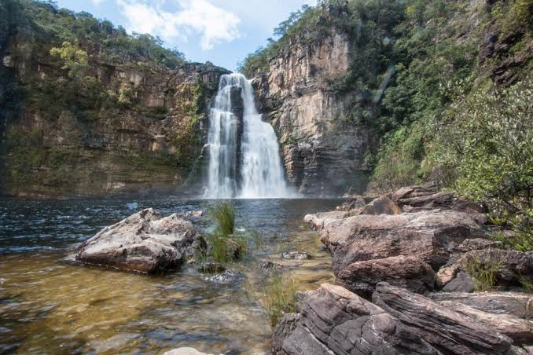
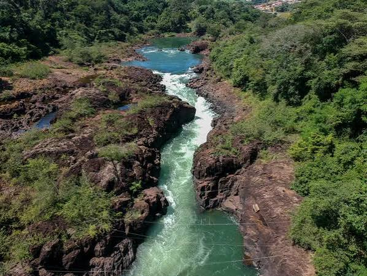
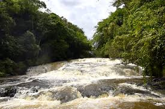
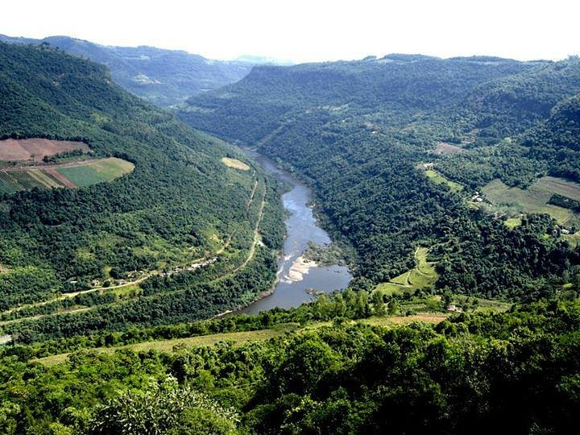
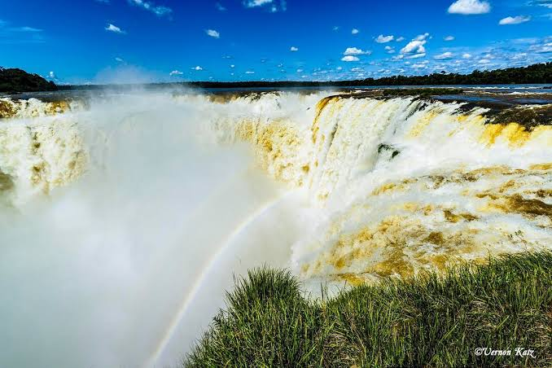

Nossa missão é proporcionar as melhores e mais seguras experiências de rafting, conectando pessoas com a natureza vibrante dos rios.

Nossa missão é proporcionar as melhores e mais seguras experiências de rafting, conectando pessoas com a natureza vibrante dos rios.
Fundada com a paixão pelo turismo de aventura, a Rafting Aventura oferece expedições emocionantes mantendo os mais altos padrões de segurança e preservação ambiental.




